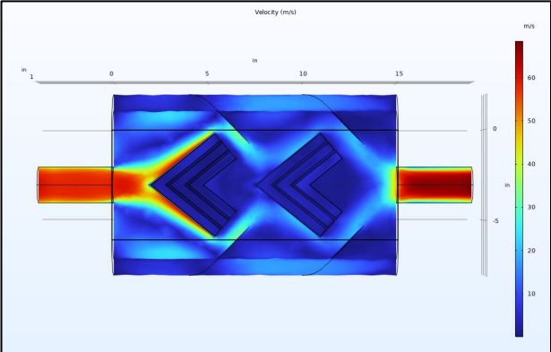
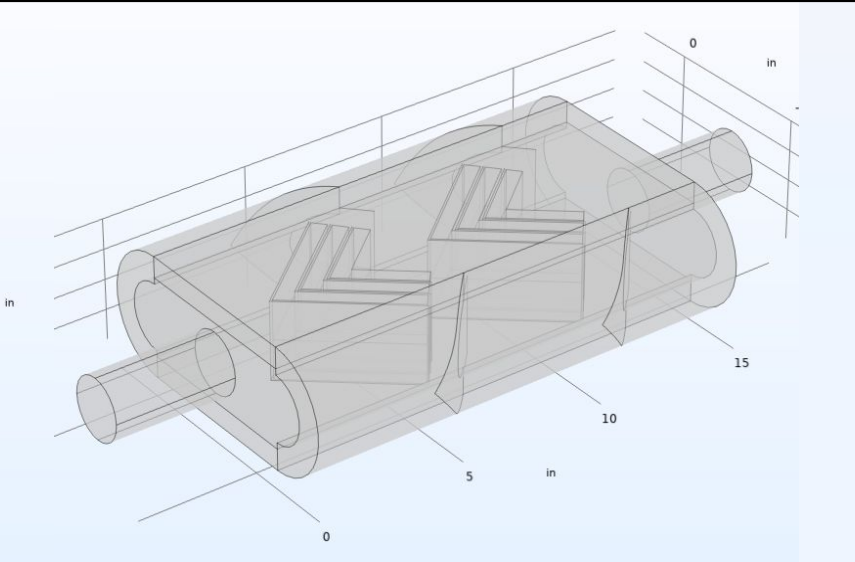
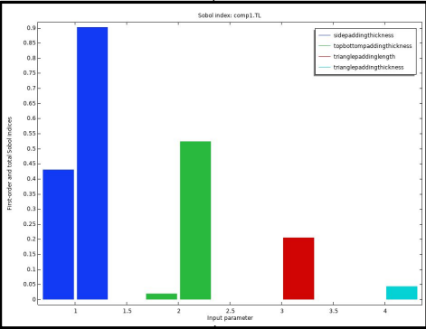
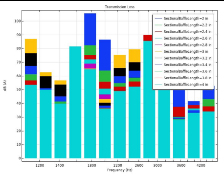
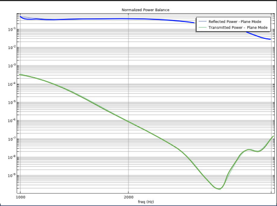
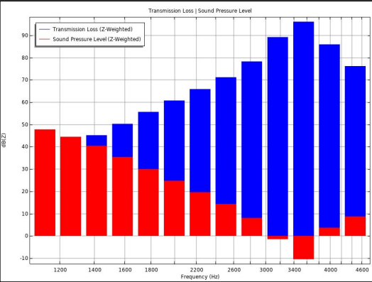
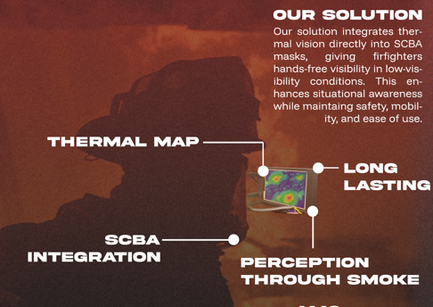
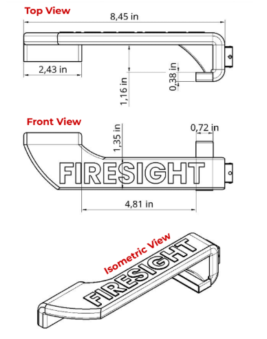
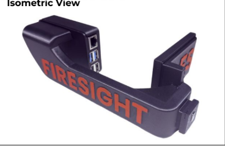

I design and simulate physical systems, from problem definition through CAD, methodology, simulation, and results. Working toward a career in mechanical engineering.
Total sound pressure level (dB) across the muffler body, acoustic simulation result.

CFD velocity field (m/s), top view, used to evaluate backpressure through the chamber.

CAD geometry of the internal chevron baffles, prior to simulation.
Designed a muffler to address noise pollution, prioritizing acoustic simulation while running CFD to verify aerodynamic performance, balancing backpressure against acoustic attenuation. Iterated the internal geometry through targeted parameter sweeps to optimize for maximum attenuation.

Sobol sensitivity analysis performed to determine which parameters most influenced acoustic performance.

Ran a parameter sweep to identify the optimal values for those parameters, maximizing acoustic performance.

Normalized power balance showing the effectiveness of acoustic damping across different material choices.

Octave-band chart showing the inverse relationship between sound pressure and transmission loss: sound pressure at the outlet decreases as transmission loss (the noise-reduction delta from inlet to outlet) increases with frequency. Final result showed a 84.5%% Transmission Loss performace increase from design criteria.

Device shown is representative of the first prototype, but still conveys the core function of the product.

Dimensioned top, front, and isometric views from the CAD drawing package.

Solution overview: thermal imaging integrated directly into the SCBA mask for hands-free visibility.
An arm-mounted screen-and-sensor device built to give firefighters real-time visual feedback in low-visibility conditions. Owned the full design cycle: CAD, mechanical assembly, and integration of the sensor and display into a single working unit. Used COMSOL to simulate thermal loading on the enclosure, confirming the electronics and display could hold up under firefighting conditions without compromising readability.
Onshape and Fusion 360 for mechanical design, plus Rhino 3D + Grasshopper for parametric work
CFD and acoustic simulation in COMSOL Multiphysics, used to validate and iterate physical designs
Own and operate a 3D printer; regular custom modeling and printing projects
Comfortable learning new tools and domains quickly, by building rather than waiting to be taught